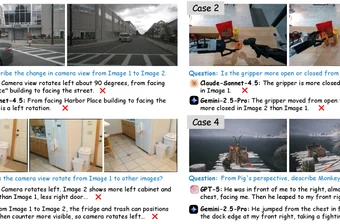
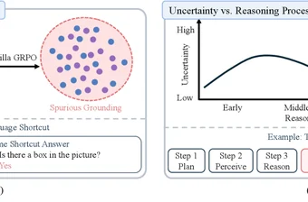
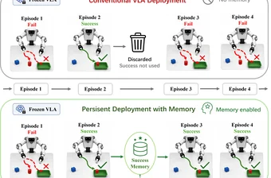
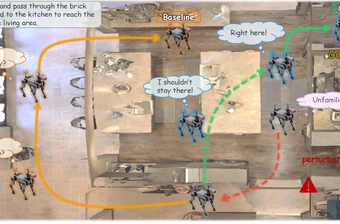
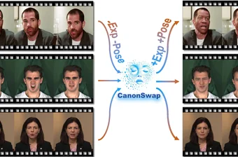
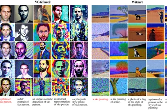

Cong Wan (万聪)
M.S. Student · Research Intern @ ByteDance Seed
Ma-Chao Institute of Vision (MIV) Lab,
Xi'an Jiaotong University
Advised by Prof. Yihong Gong
· wancong[at]stu.xjtu.edu.cn
About
I am an M.S. student in Computer Science and Technology at Xi'an Jiaotong University (XJTU), advised by Prof. Yihong Gong. I received my B.S. in Mathematics from XJTU in 2024. I am currently a Research Intern at ByteDance Seed (led by Chang Zhou), working on foundation models and embodied AI. Previously I interned at Microsoft Research Asia (world models) and Alibaba DAMO Academy (unified visual generation).
My research centers on multimodal foundation models — spanning model design, large-scale pre-training, data construction, and benchmark evaluation. I am especially interested in advancing the intelligence of unified multimodal models, so they can perceive, reason, and act more like genuinely intelligent systems.
News
Publications
★ denotes representative (first-author) work. Full list on Google Scholar.

CVPR2026
NeurIPS2026
NeurIPS2026
CVPR2026
ICCV2025
NeurIPS2024